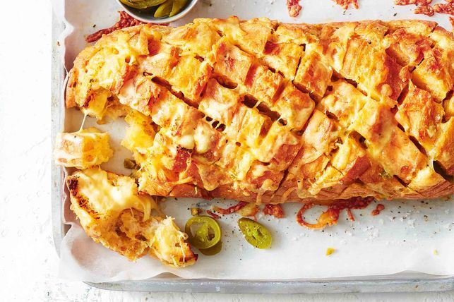

Mexican Cheesy Garlic Bread

Description
A easy and tasty pull apart Mexican cheesy garlic bread with kick from the chilli and jalapenos
Ingredients
- 150g unsalted butter, softened
- 3 garlic cloves, crushed
- 1 tbs finely chopped pickled jalapeno
- 1/4 tsp Mexican chilli powder
- 1 1/3 cups grated tasty cheese
- 1/2 cup grated mozzarella cheese
- Bread
- A pinch of salt and pepper
Steps
- Preheat oven to 190C/170C fan-forced. Line a baking tray with baking paper.
- Place butter, garlic, jalapeño, chilli powder and ²⁄³ of the cheese in a bowl. Season. Stir until well combined.
- Cut the whole loaf diagonally into 3cm-thick slices, being careful not to cut all the way through. Repeat cutting in opposite direction to create diamonds.
- Place loaf on prepared tray. Carefully spread butter mixture in between cuts in bread. Sprinkle with remaining cheese. Bake for 15 minutes or until cheese has melted and bread is golden. Stand for 2 minutes. Serve.